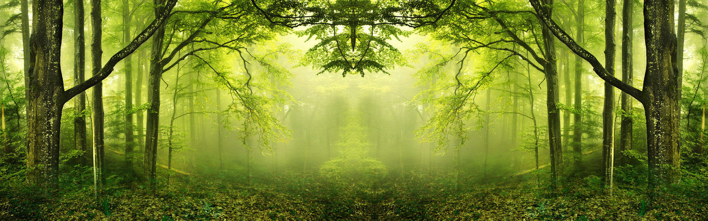
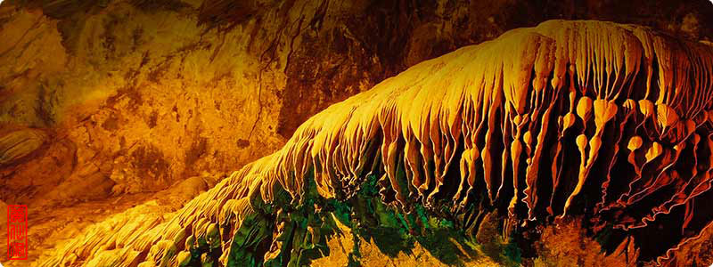
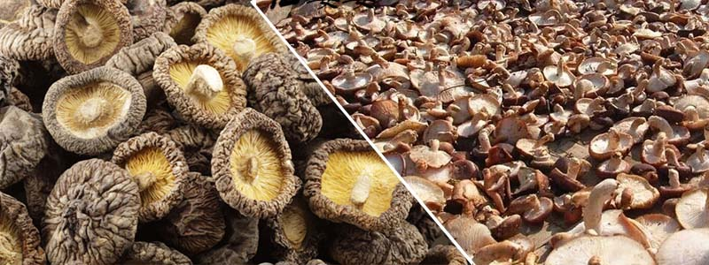

西汉末年，大洪山绿林人氏王匡、王凤为反抗王莽政权的残暴统治，在今客店镇设立客栈，招兵买马，聚义英雄，举行了绿林赤眉起义，客店也因此而得名。
优质的水源、丰富的植被、优质的土壤。饮用水PH值为7.35，呈天然弱碱性，水质优于国家饮用水卫标准和世界卫生组织（WHO）标准。
“六十年岁小，七十满街跑，八十不算老，九十随便找，百数精神依然好。”
—————长寿之乡客店
客店镇官方宣传片
湖北省客店镇
风景秀丽 纯天然土特产
土生土长


